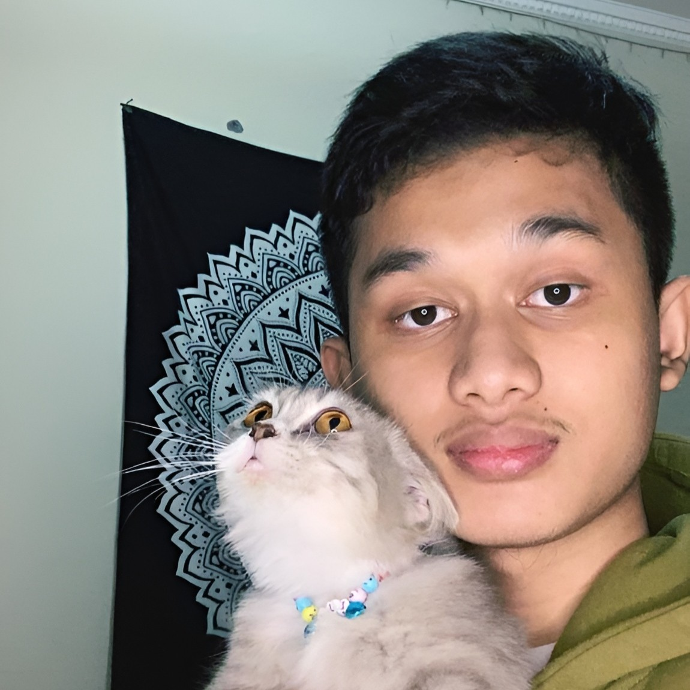
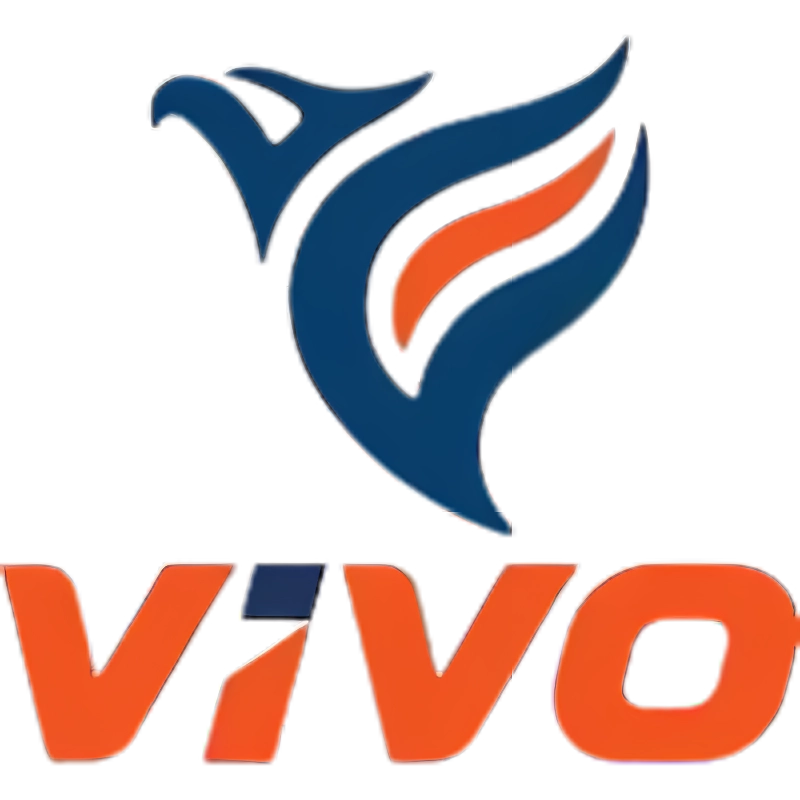
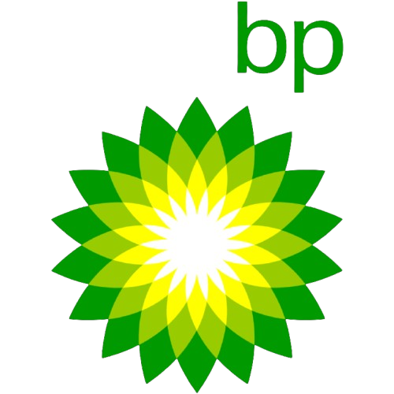

Temukan SPBU Terdekat dan Jelajahi SPBU di Bandung dengan Mudah! Seperti Pertamina, Shell, dan Vivo dalam Satu Peta! Dengan teknologi peta interaktif kami, Anda dapat dengan mudah mencari dan menemukan SPBU dari berbagai merek ternama seperti Pertamina, Shell, dan Vivo yang tersebar di seluruh wilayah Bandung yang akan membuat perjalanan Anda lebih hemat waktu dan tenaga.
Kami adalah tim yang bertugas untuk mengembangkan solusi peta SPBU interaktif yang dapat memudahkan pengguna dalam menemukan lokasi SPBU terdekat dengan akurasi dan kemudahan pencarian.
Front-end Developer bertugas menciptakan tampilan dan interaksi yang nyaman bagi pengguna dengan memanfaatkan HTML untuk struktur, CSS untuk desain, dan JavaScript untuk interaktivitas. Platform utama yang digunakan dalam proyek ini termasuk HTML, Tailwind CSS, dan alat pengembangan seperti VS Code.

Back-End Developer bertugas untuk menyimpan, mengambil, dan mengelola data terkait SPBU yang mencakup informasi seperti nama SPBU, alamat, latitude, dan longitude dalam Firebase Realtime Database secara real-time.
Data Integration Developer bertugas mencari, mengumpulkan, dan mengintegrasikan sumber data seperti nama SPBU, longitude, latitude, dan alamat, memastikan data yang dikumpulkan akurat, konsisten, dan dapat digunakan oleh tim pengembang atau aplikasi.
Perusahaan energi terbesar di Indonesia yang menyediakan berbagai produk bahan bakar, gas, dan energi terbarukan. Sebagai perusahaan milik negara, Pertamina berkomitmen untuk memenuhi kebutuhan energi masyarakat Indonesia dengan produk berkualitas dan layanan yang andal, serta mendukung pembangunan berkelanjutan di seluruh negeri.
Perusahaan energi global yang menyediakan berbagai produk energi, termasuk bahan bakar kendaraan, pelumas, dan gas alam. Dengan komitmen pada inovasi dan keberlanjutan, Shell berusaha untuk menyediakan solusi energi yang lebih bersih dan efisien, serta berperan aktif dalam mengurangi dampak lingkungan melalui teknologi ramah lingkungan di berbagai sektor industri.

Perusahaan ini menyediakan bahan bakar berkualitas tinggi, pelumas, dan produk energi lainnya, dengan fokus pada pelayanan pelanggan yang unggul dan keberlanjutan. Vivo Energy berkomitmen untuk mendukung mobilitas masyarakat Indonesia dengan produk yang efisien dan ramah lingkungan.

Perusahaan ini berfokus pada inovasi dalam pengembangan energi terbarukan dan solusi energi bersih. Dengan pendekatan yang berorientasi pada keberlanjutan, BP berinvestasi dalam teknologi terbaru untuk memimpin transisi dunia menuju energi yang lebih ramah lingkungan. Sebagai salah satu pemain utama di industri energi, BP berkomitmen untuk memberikan kontribusi positif terhadap keberlanjutan dan perubahan iklim global.
Analisis ini menunjukkan jumlah SPBU Pertamina yang sangat tinggi dan Vivo serta BP memiliki peran yang sangat kecil.